Areas
 |
Residential area | Area used by military, barracks, military training area, etc. | |
 |
Parking lot |  |
Business, Mall or area with predominant retail shops |
 |
Marina, moorings for yachts and motor boats |  |
School, college, university, campus or building |
 |
Hospital |  |
Industrial area or industrial estate, predominantly workshops, factories or warehouses; area used for rails, railway property |
 |
Nature reserve |  |
Playground for children |
 |
Camp ground, site for campers |  |
Farm, agriculturally used area with buildings such as residential buildings, accommodation, shelters, stables, garages, silos etc. |
 |
Mining above ground, quarry, pit (gravel, clay, ...), open-cast mining |  |
Buildings |
 |
forest, commercial forest; wood; distinguished between mixed, deciduous or coniferous forest |  |
Meadow, usually out of town |
 |
Golf course | Background of map | |
 |
graveyard |  |
vineyard |
 |
Park, green space |  |
danger area, prohibited area |
 |
Zoo |  |
Garden plot, allotment |
 |
Cultivated land, agriculturally used area such as fields for cereal and vegetable and tree nursery. These are identical to the map background. |  |
Power station, used for producing electricity or warmth; transformer station |
| Administration, Offices |  |
Construction site (but also fallow) |
|
 |
Dump, disposal site |  |
heath |
| 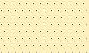 | Beach |  |
Slit, swamp |
 |
Uncultivated land, undergrowth, bush |  |
Path, square or street where only pedestrians are allowed, e.g. pedestrian precinct or shopping arcade |
 |
Playing field, track |  |
Water in general, sea, lake, pond, river, dam lake etc. |
 |
Mountain pasture, alpine meadow, area above tree line | Sports complex, stadium | |
 |
Scree |  |
Ground covered with sand, none or sparse vegetation |
| Rock | Marshland, swamp, bog, marsh, meadow, reeds, mudflats, salt marsh | ||
 |
Glacier, area coverd with ice all year round |  |
Orchard, fruit plantation, cultivated area with trees or bushes for food production |
Meaning of letters in the areas:
- B = Construction site (Bau-, Brachland)
- C = Camp ground, Caravan
- H = Trade (Handel)
- I = Industry
- K = Hospital (Krankenhaus)
- N = Nature reserve
- R = Mining (Rohstoffabbau oberirdisch)
- S = School, college
- V = Administration (Verwaltung)
- Z = Zoo
Cultivated land (farmland) is in most countries the most frequently occurring area (in Germany it is 52%). This area is not showed separately but is identical to the map background.
Forest covers a significant area of most countries (in Germany it is 31%) and therefore is good for rough orientation.

Roads
| Roads: | |
 |
Freeway, Road with a structurally divided lanes (usually a median strip) and dedicated restrictions (one way, prohibited for pedestrians and cyclists). Usually two lanes per direction and a shoulder. |
 |
Freeway entrance or exit, usually with the same restrictions as the freeway itself. |
 |
Road similar to a freeway, but no freeway. |
| 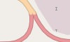 | Interstate or A road entrance or exit, like the freeway entrances or exits. |
 |
Interstate or A road, Main street under centralized administration with dedicated signs, usually connecting larger cities and for serving national traffic. Also: Roads of higher importance. |
 |
Secondary or well-built district road (or entrance onto one of these) roads with a centre line, which connects smaller or larger towns. The road serves the regional traffic. |
 |
District road, well-built road primarily used for regional traffic. Main road with less traffic, connecting smaller towns. Main roads in towns used for driving across town. |
 |
Road in residential area, road in and around residential areas, not belonging to the other types of roads. |
 |
Side street, publicly passable side street in a very simple state, usually no centre line. E.g. district roads connecting villages that are to narrow to be secondary roads. |
 |
Access road, access to institutions like sports complzips, beaches, motorway services or other buildings in general. |
| 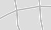 | Traffic-calmed area, a road where one has to to mind playing children. Pedestrians have priority and only walking speed is allowed. |
 |
Roads and paths with restricted access, these roads are drawn in a different color: - General prohibition to use: Usage is prohibited or not possible. - Private road: The owner generally prohibits to use the road (exceptions are possible). - Agricultural traffic: Usage is permitted for "agricultural traffic" only. - Forestry traffic: Usage is permitted for "forestry traffic" only. - Delivery traffic allowed: Usage is permitted for delivery of goods to the customer only. |
| Miscellaneous: | |
| 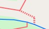 | Stairs, on pavement and hiking paths only for pedestrians. |
 |
Pedestrian precinct, way, square or road where only pedestrians are allowed (e.g. shopping malls). |
| Bicycle, foot and bridle paths: Path is not wide enough for a vehicle. |
|
 |
General bicycle path, mainly for cyclists. |
 |
General foot path, mainly for pedestrians. |
 |
Combined bicycle and foot path, joint usage through cyclists and pedestrians. |
 |
Bridle path, path for riders. |
 |
General way or path, here: hiking path / trail; not wide enough for vehicles. |
 |
General way or path, restricted use |
| Agricultural, country or dirt road. Road is wide enough for a vehicle. Three types can be distinguished: |
|
 |
Quality grade 1, paved path (asphalt, concrete, cobblestones, etc.). |
 |
Quality grade 1, restricted use |
 |
Quality grades 2,3 (as well as 0) 2 = paved path (gravel or other compacted ground). 3 = paved or repaired path, consisting of hard and soft ground (e.g. fine gravel, sand or mud path). 0 = No quality grade is set for this path. |
 |
Quality grades 2,3 (as well as 0) restricted use |
 |
Quality grades 4,5 4 = unpaved path, consisting mainly of soft material, plant growth along the middle of the way (e.g. grass, sand or mud path). 5 = unpaved path, surface consisting of grass, soil etc., usually just a trail in the grass, partially hard to distinguish from surround area. |
| 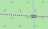 | Quality grades 4,5 restricted use |
| Hiking paths. Three difficulties are distinguished: |
|
| 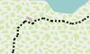 | Hiking path, T1 or T2 |
 |
Hiking path, T3 or T4 |
 |
Hiking path, T5 or T6 (also Via Ferrata) |
Note: Leisure time activities in mountains require a certain amount of experience and hold danger. Basing only on this map no mountain hiking should be planed. For security reasons routing will not route you through hiking paths with category 3-6 (exception: Freizeitkarte Alps).

Points-Of-Interest (POIs)
We chose a universal approach to Points-Of-Interest (POIs): There are only few POIS which are represented with their own symbol. Most POIs are displayed as a red square. Further information to these POIs can be display by hovering with the cursor or needle over the POI. Usually POIs are only displayed if a name or description is available.
 |
(i) (Tourist-) Information | (significant) Tree | |
 |
Summit (usually with altitude reading) |  |
(I) Industrial plant |
| 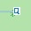 | (Q) Source |  |
Wind-driven power station |
 |
Pylon (of a high voltage line ) |  |
Airport |
 |
Viewpoint |  |
(€) ATM (or BANK) |
 |
Hospital |  |
Cave |
 |
Police station | (U) Underground station entrance | |
 |
(Train-) Station |  |
(Telecommunication) Pole |
 |
(H) Stop (bus, tram) | 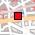 | Name of location megacity |
 |
Name of location large city or independent town |
 |
Name of location town, district, village, hamlet |
| 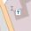 | (T) Gas station |  |
Store (type of store) |
 |
Pub, Bar | 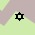 | Jewish place of worship (e. g. synagogue) |
 |
Muslim place of worship (e. g. mosque) |
 |
Christian place of worship (e. g. church) |
| (S) School |  |
(M) Museum | |
 |
Shelter |  |
Lighthouse |
 |
Campsite, camp round |  |
Hotel, Motel |
| 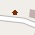 | Inn |  |
Playground |
 |
Restaurant (type of restaurant) |  |
(R) Picnic area, Service Area |
 |
Parking |  |
limited Parking |
 |
(Freeway) Exit (with number and marking) |
 |
general Point-Of-Interest with type and marking |
| 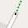 | Bollard (on a street) |  |
Gate |
 |
Barrier |  |
Cycle Barrier |
 |
(military) Bunker |  |
Ruin |
| 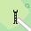 | Watch tower | ||
| Additionally in (high) mountains: | |||
 |
Alpin Hut (with food and drink), mountain hut |
 |
Alpin Hut (without food and drink) |
| 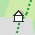 | Wilderness Hut, basic self supporter hut |
 |
Basic Hut, bivouac hut |
 |
Lean-To, public hut with overnight accommodation |
 |
Mountain col (Saddle) |
| 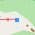 | Aerial Lift | Pass |
Note: Leisure time activities in mountains require a certain amount of experience and hold danger. Basing only on this map no mountain hiking should be planed.